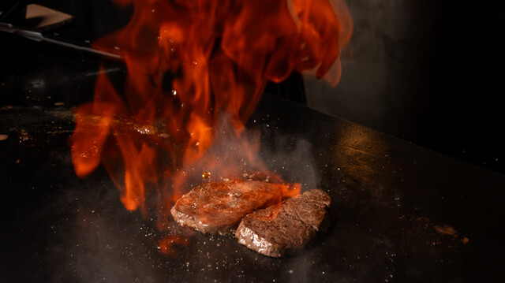
About
株式会社wtscは、沖縄を拠点に個性豊かな4つの飲食店とフレグランス事業を展開。それぞれが異なる世界観を持ちながら、すべての場所でお客様の記憶に残る「特別な体験」をお届けします。
那覇市泊に構える全14席の完全個室ステーキハウス。目の前の鉄板で職人が炎を操りながら仕上げる一皿は圧巻のパフォーマンス。A5ランク黒毛和牛や豪州産ブラックアンガス長期穀物牛など厳選素材と、特製マッシュルームスープ・特製ソースで至高のひとときを。誕生日・記念日のサプライズ演出も対応。
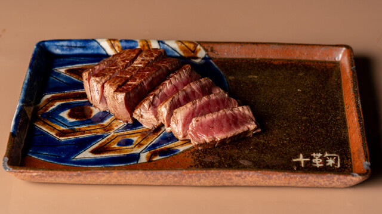
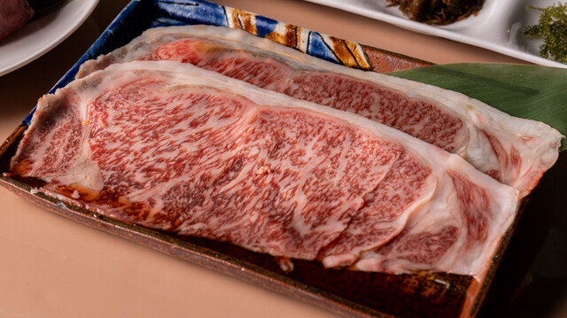
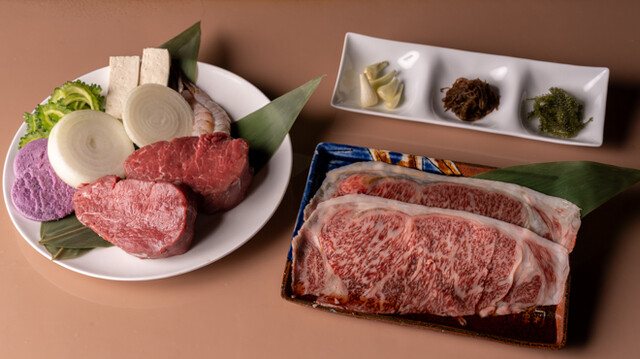
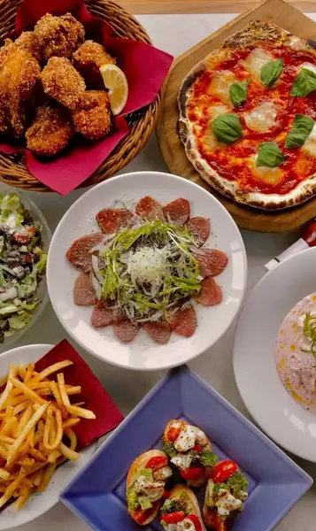
国際通りから浮島通りへ、徒歩2分の角に立つビアホールレストラン。地元っ子・観光客・海外の方が入り混じる賑やかな空間で、クラフトビールやローカルラムカクテルを。手作りピザ・パスタ・リゾットなどフードも充実。オリジナルビール「Knock Out」が一杯目の選択肢。
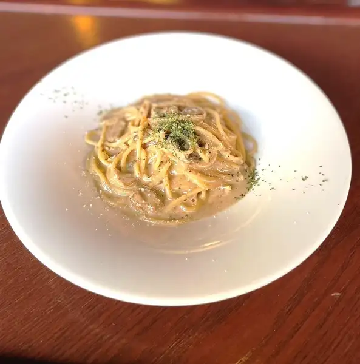
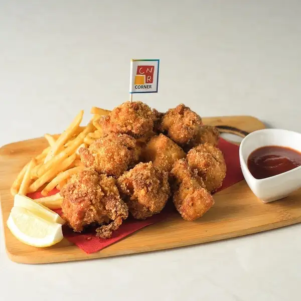
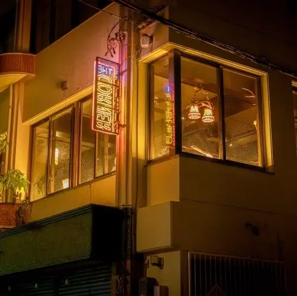
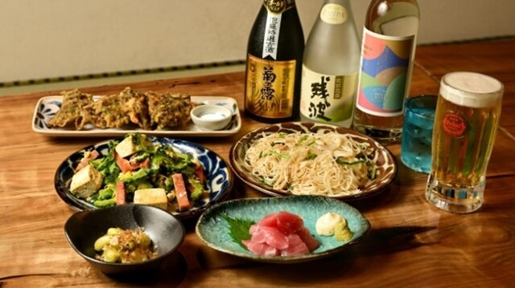
那覇・平和通りに佇む、朝8時から深夜まで通しで営業するお食事処。タコスライス・スパムチーズカツ・茄子味噌定食など沖縄らしいメニューが揃い、2階には禁煙の座敷も完備。家族連れからゆんたく（おしゃべり）仲間まで、国際通りからも徒歩7分で気軽に立ち寄れます。
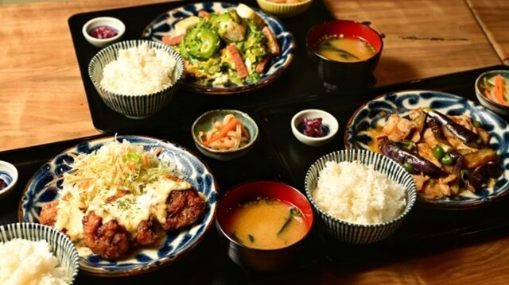
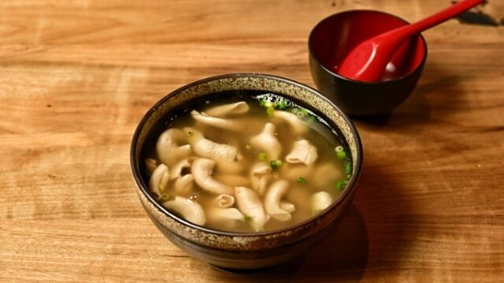
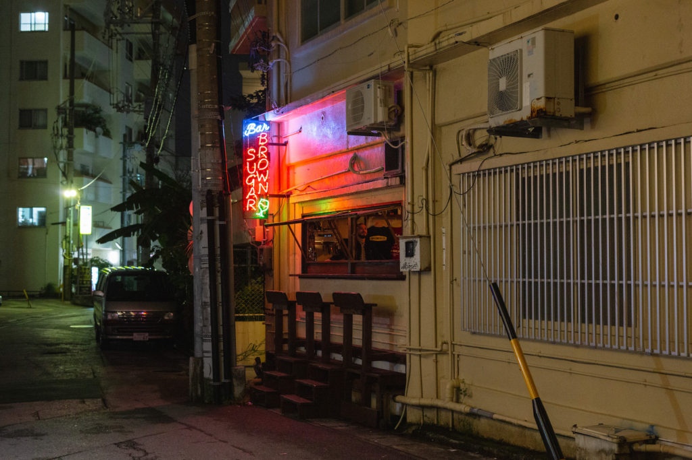
国際通りから沖映通りへ入った路地に潜む、癒しの隠れ家バー。赤いネオンが灯っていたらOPENの合図。D'Angeloの流れるような良質な音楽の中、ビールやハイボールを片手にゆっくり過ごす大人の夜。売りはお酒より人間関係、窓枠外のカウンター席で那覇の夜風とともに。
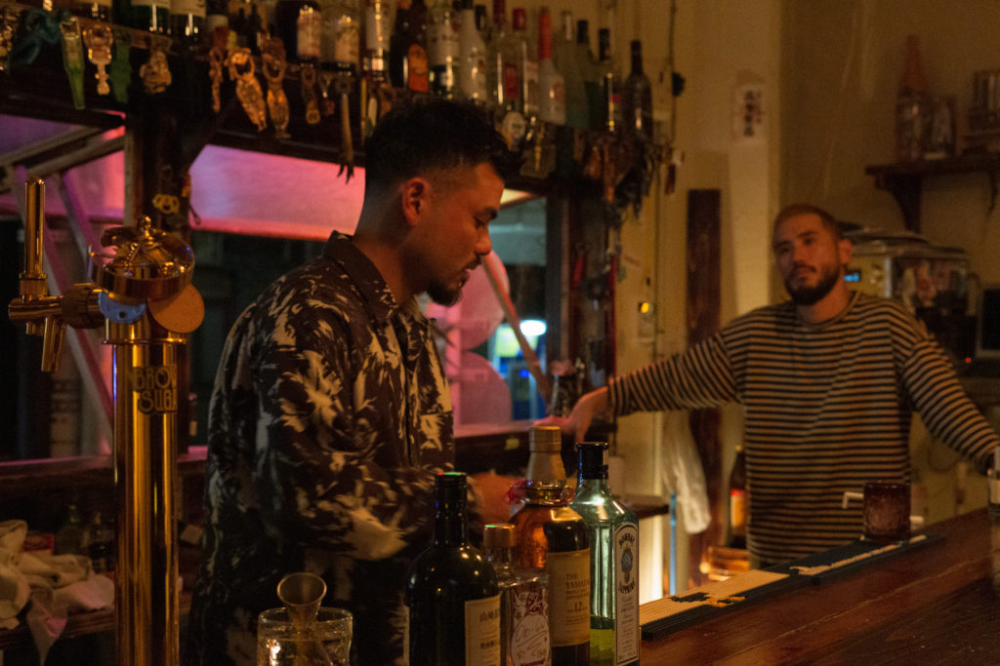
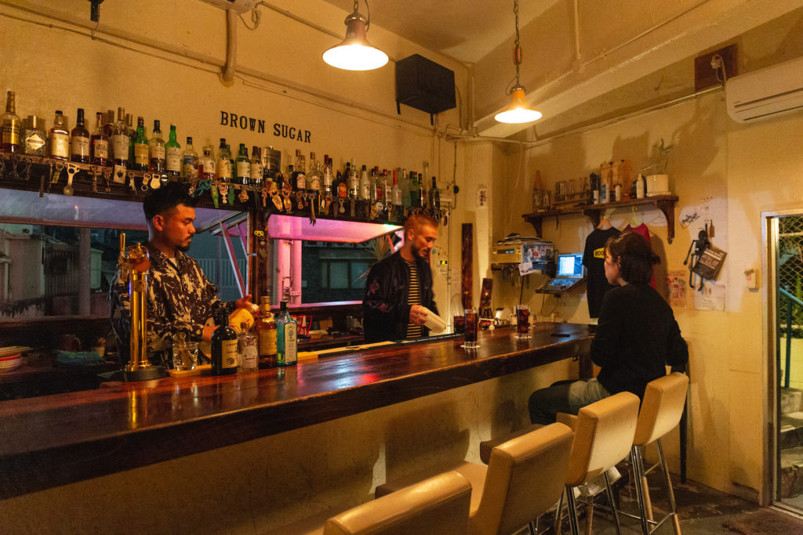
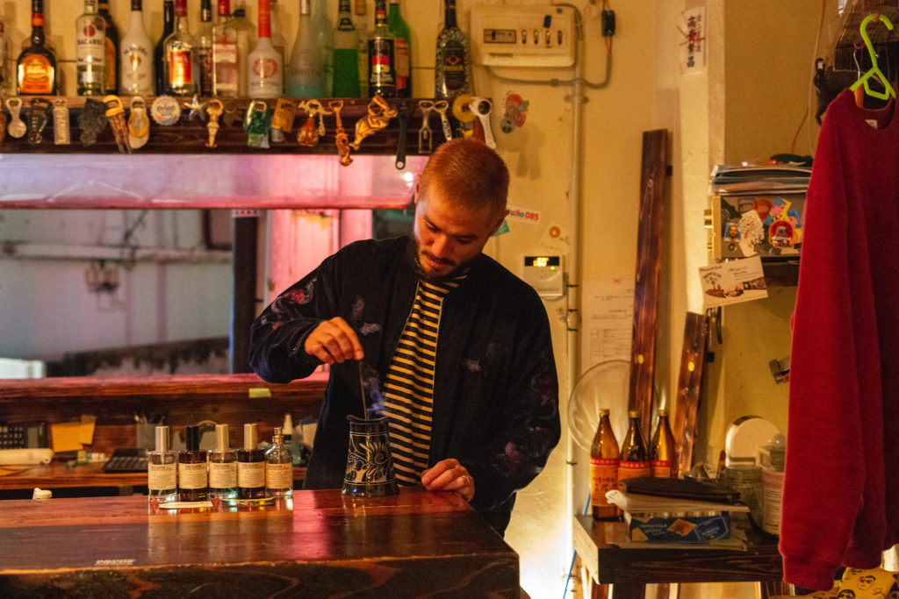
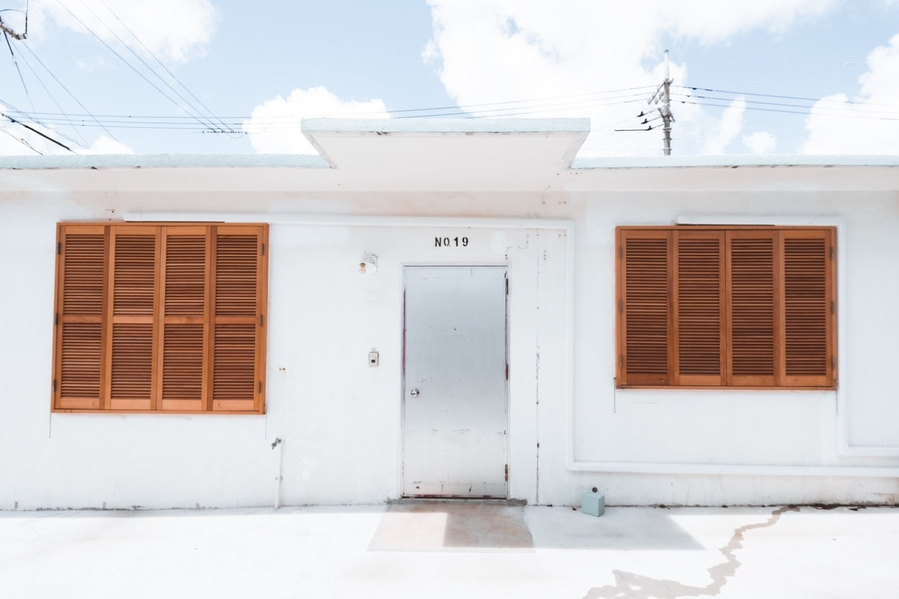
複数の香りの中から自分の好みを選び、スタッフと対話しながら世界にひとつのオリジナルフレグランスを作る体験型ショップ。100mlボトル1本¥5,500から。口コミ評価5.0を誇り、女性・カップル・家族連れにも人気。旅の記念・大切な方へのギフトにも。
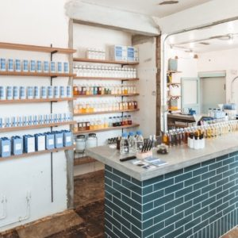
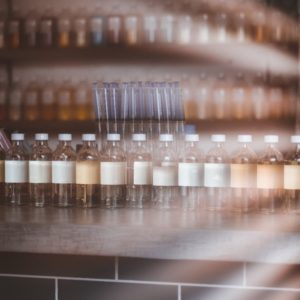
Contact
各店舗へのご予約・採用・事業に関するお問い合わせはこちらから。